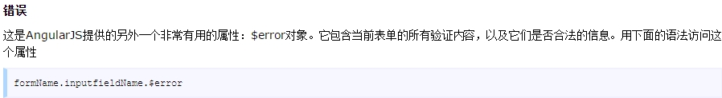
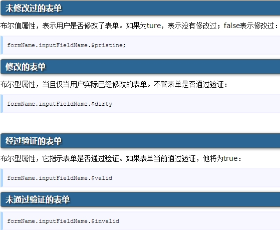

angularjs特点
react
React.js 语法
首先要引入相应的 react 的 js 文件
< script type="text/babel"> React 代码块< /script>
ReactDOM.render()：是 React 的最基本方法，用
于将模板转为 HTML 语言，并插入指定的 DOM 节点。
JSX 语法：允许 HTML 与 JavaScript 混写，不加
任何引号，遇到 HTML 标签（以< 开头），就以 HTML 规则解析
，遇到代码块（以{ 开头），就用 JavaScript 规则解析。所以
JSX 语法中 HTML 标签必须要有结束标签
组件：React 允许将代码封装成组件（component）
，然后象插入普通 HTML 标签一样，在网页中插入这个组件。
React.reateClass() 方法就是用来生成一个组件类。组件类的
第一个字母必须大写，只能包含一个顶层标签。可以在组件中加
入任一属性，组件的属性可以在组件类的 this.props 对象上获
取。注意：添加组件属性时，class 属性要写成 className，
for 属性要写成htmlFor，因为 class 和 for 是 JavaScript
的保留字。
this.props：this.props 对象的属性与组件的属性
一一对应，但是有一个例外， this.props.childen 属性，表示
组件的所有子节点。this.props.childen 的值有三种可能，当
前组件没有子节点时，返回 undefined；当前组件有一个子节点
时，返回的数据类型是 object；当前组件有多个子节点时，返
回的数据类型是 array。
PropsTypes 属性：用来验证实例的属性是否满足要
求。
getDefaultProps 方法：用来设置组件属性的默认
值
this.refs：组件 MyComponent 的子节点有一个文
本输入框，用于获取用户的输入。这时就必须获取真实的 DOM
节点，虚拟 DOM 是拿不到用户输入的。为了做到这一点，文本
输入框必须有一个 ref 属性，然后 this.refs.[refName] 就
会返回这个真实的 DOM 节点
this.state：
区分 this.props 和 this.state：this.props 表
示那些一旦定义，就不再改变的特性，而 this.state 是会随着
用户互动而产生改变的特性。
Ajax：组件的数据来源，通常是通过 Ajax 请求从服
务器获取，可以使用 componentDidMount 方法设置 Ajax 请求
，等到请求成功，再用 this.setState 方法重新渲染 UI